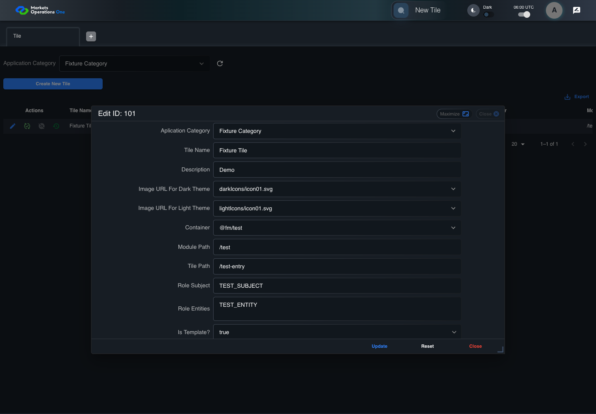
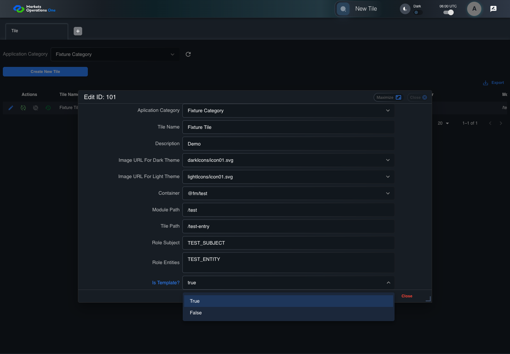
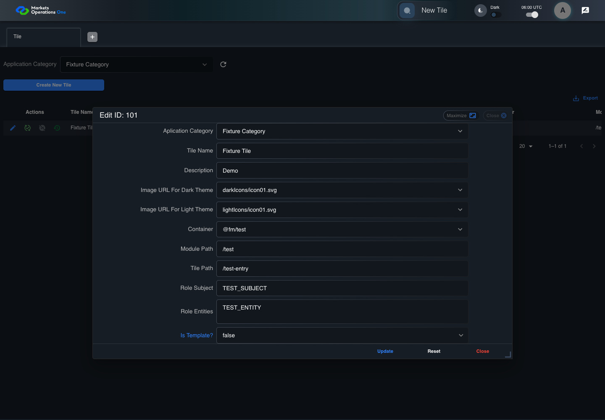
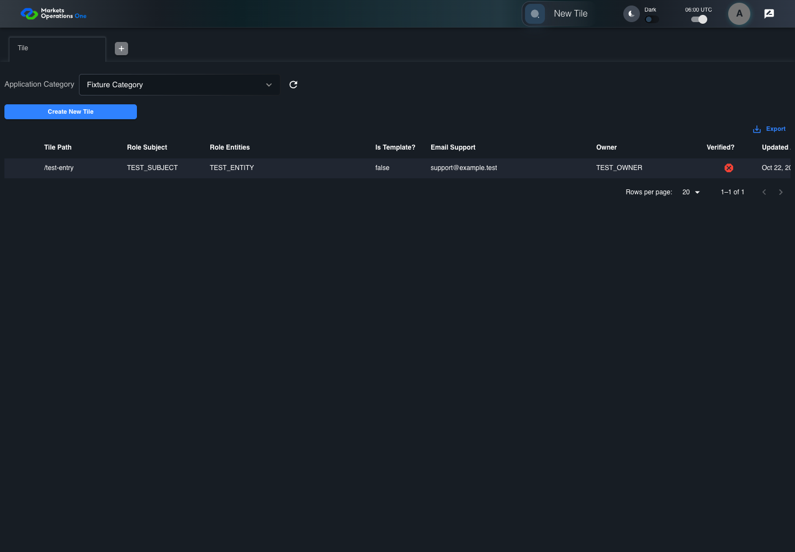

UI-ADM-SEL-012 actual administration UI with step evidence
PASS · application/run-050/ui-adm-sel-012-actual-administration-ui-with-step-evidence-3809e13b9044-attempt-1 · ACTUAL_APPLICATION_LOCAL_SERVICES
Actual current React administration screens. Controlled browser login supplies UI-ADMIN-01 and TEST_OWNER, or the declared SUPER_USER. Controlled BFF routes return the case-declared records. Other controlled saves persist submitted field values. This run establishes frontend handling only. It does not execute BFF validation, storage, audit generation, or authorization.
2026-10-22T06:00:58.507Z to 2026-10-22T06:01:04.015Z
Assertions and result · Artifact manifest · Exact run inputs and source hashes
Result SHA-256:ca0a02e044cdd21cce82ecb2474314c3258108df82f865c02650a90e0b12eed9Machine observations
- source-resolved-template-selector.json
6cc5530f26cd99fe21eee93ef97e9330e154b75c1c737b5eb691b7cc8205f722 - ui-origin-admin-requests.json
2fc41df6fb9747f1ceb3a122503b6cd7c198f44dcc9184d9e79cb5f548694e52
Screenshot capture: CAPTURED. Named frames: 8.
Step screenshot evidence: COMPLETE. 7/7 canonical steps have execution screenshots.
Canonical step timeline
Given Admin A is authenticated as fixture UI-ADMIN-01 with the case-specific permissions
Execution: PASSED.
1. step-01 Visible state after step 1: Given Admin A is authenticated as fixture UI-ADMIN-01 with the case-specific permissions
2026-10-22T06:01:00.060Z · 1440×1000
Step: /Users/lushevol/code/github/ratan-release-impact/workbench/tasks/ui-test-coverage-20261022/test-cases.md:9713
SHA-256:5b18e61c9d4c5c1f0cee1300bdcda34b1418a25c1a97509d35e55f2dac5d5abcAnd Tile edit form is open with Is Template? true
Execution: PASSED.
2. step-02 Visible state after step 2: And Tile edit form is open with Is Template? true
2026-10-22T06:01:01.585Z · 1440×1000
Step: /Users/lushevol/code/github/ratan-release-impact/workbench/tasks/ui-test-coverage-20261022/test-cases.md:9714
SHA-256:fe971b37cd676564070d1a09fc9c88522045de8d84ed5773cc9c456b0a5ed73fWhen Admin A opens combobox named "Is Template?" inside the dialog named "edit ID: 101" inside the "Tile" administration tabpanel
Execution: PASSED.
3. step-03 Visible state after step 3: When Admin A opens combobox named "Is Template?" inside the dialog named "edit ID: 101" inside the "Tile" administration tabpanel
2026-10-22T06:01:01.808Z · 1440×1000
Step: /Users/lushevol/code/github/ratan-release-impact/workbench/tasks/ui-test-coverage-20261022/test-cases.md:9715
SHA-256:91b839c87af207152b8c342c6e83dd957064da3f9a46782f810971d08dfc9e14And Admin A clicks option named "false" inside the popup for the Is Template? combobox in the Tile edit dialog
Execution: PASSED.
4. step-04 Visible state after step 4: And Admin A clicks option named "false" inside the popup for the Is Template? combobox in the Tile edit dialog
2026-10-22T06:01:01.959Z · 1440×1000
Step: /Users/lushevol/code/github/ratan-release-impact/workbench/tasks/ui-test-coverage-20261022/test-cases.md:9716
SHA-256:4916d4526316fd3571431344bca2f9f4ee53ad0b8bb6332986c091a6dcaa5010And the declared controlled field clock advances by 300 milliseconds
Execution: PASSED.5. step-05 Visible state after step 5: And the declared controlled field clock advances by 300 milliseconds
2026-10-22T06:01:02.096Z · 1440×1000
Step: /Users/lushevol/code/github/ratan-release-impact/workbench/tasks/ui-test-coverage-20261022/test-cases.md:9717
SHA-256:44ef62290d73baa19f56539f640d027e543026e3044d697ce8269ca000b153fcAnd Admin A clicks button named "Update" inside the dialog named "edit ID: 101" inside the "Tile" administration tabpanel
Execution: PASSED.
6. step-06 Visible state after step 6: And Admin A clicks button named "Update" inside the dialog named "edit ID: 101" inside the "Tile" administration tabpanel
2026-10-22T06:01:02.376Z · 1440×1000
Step: /Users/lushevol/code/github/ratan-release-impact/workbench/tasks/ui-test-coverage-20261022/test-cases.md:9718
SHA-256:c71a822421f7deecd67038e2962598d23e33cfdb983595e72a8fd6463583062cThen cell named "Is Template?" inside row with Record Id "101" in the "Tile" administration data grid displays "false"
Execution: PASSED.7. step-07 Visible state after step 7: Then cell named "Is Template?" inside row with Record Id "101" in the "Tile" administration data grid displays "false"
2026-10-22T06:01:03.167Z · 1440×1000
Step: /Users/lushevol/code/github/ratan-release-impact/workbench/tasks/ui-test-coverage-20261022/test-cases.md:9719
SHA-256:99127aabc10fbeb67c0843730e1f50f2bd6f9349874fd9d65a433dcead3bcca7
Additional named frames

The final visible state after the named test assertions.
2026-10-22T06:01:03.340Z · 1440×1000Step: Test source: /Users/lushevol/code/github/ratan-release-impact/workbench/e2e/audit-specs/admin-expanded.spec.ts:15
SHA-256:
5400b0801132a85684fb8eba7477657432d932bf549ed9282a48ece3a015f638Screenshots establish visible state only. Assertions and traces support functional claims.